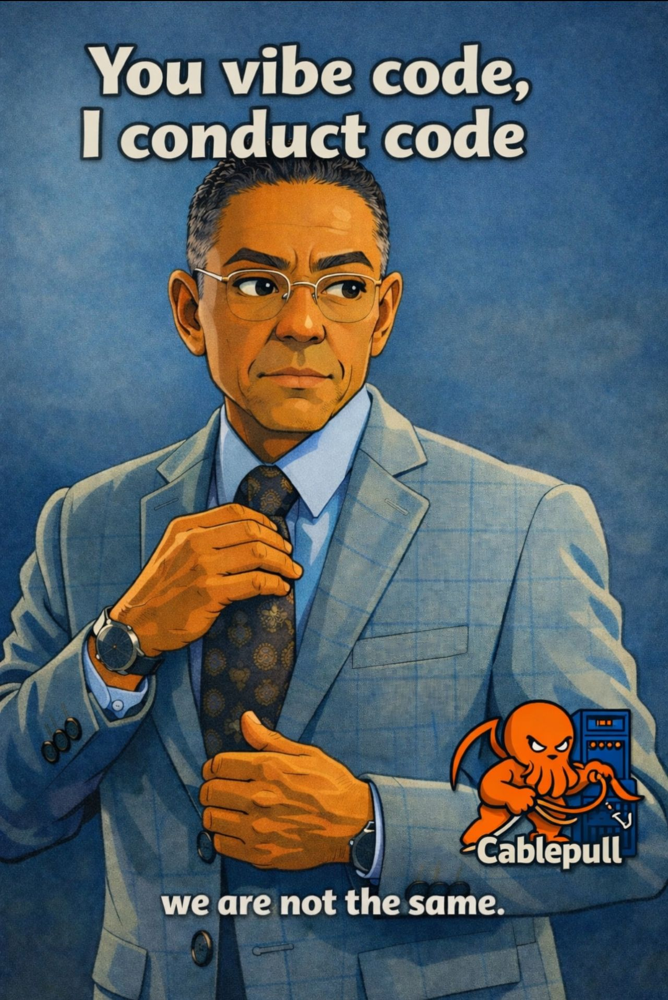
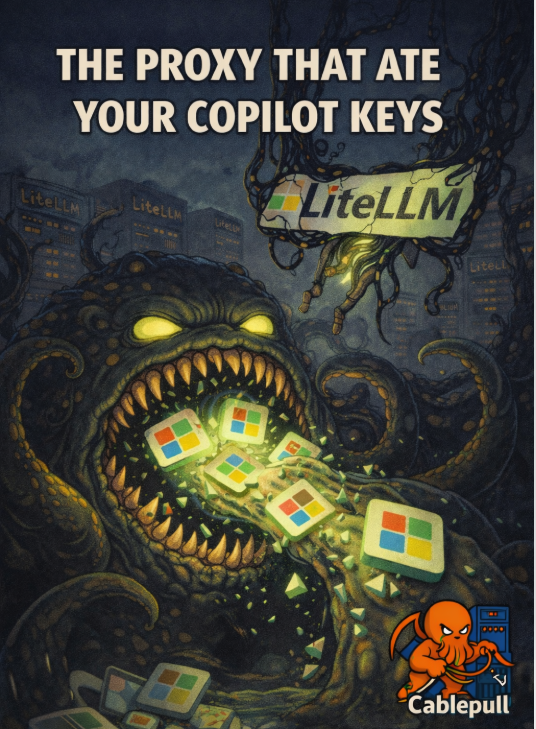

…/security/conduct-code.html  Conduct code Poster page, outbound links, and the full image—select the card to open it.
…/security/proxy-that-ate-copilot.html  The proxy that ate your Copilot keys AI gateways, logging, and blast radius—select the card to read the full note.
…/security/ciso-leverage-cve-architecture-coe.html CISO leverage and a security architecture CoE AI-era delivery, five years of CVE publication data (chart), myth vs measurable tide, and standing up a center of excellence—with citations.